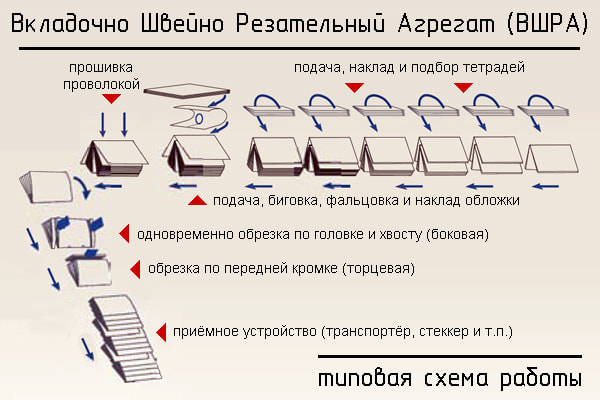
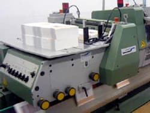
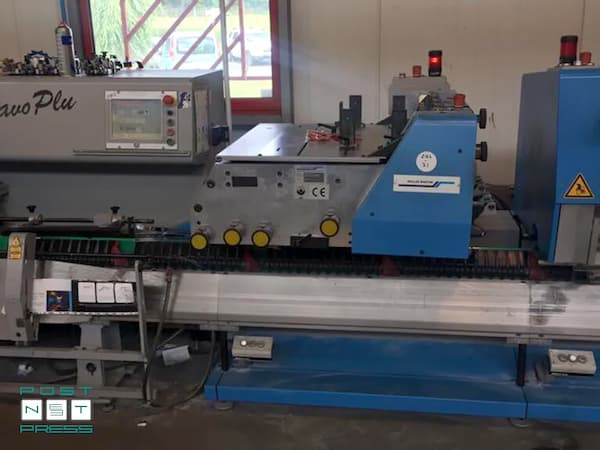
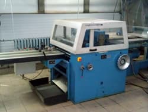

ВШРА - Вкладочно-Швейно-Резальный Автомат

В процессе ведения различных видов деятельности у деловых людей, представителей научной и творческой интеллигенции возникает потребность в печати брошюр, газет, журналов большими тиражами в минимально короткие сроки.
Для этого в современной полиграфической индустрии используют ВШРА – вкладочно-швейно-резальные агрегаты, которые отличаются высокой степенью автоматизации и производительностью. На подобных машинах имеется возможность изготовить тираж в 20 тысяч экземпляров и более всего за 1-2 часа.
Модульная конструкция ВШРА дает возможность подключать к устройствам другое оборудование, например, стеккер, который автоматически укладывает изделия в стопки, и автомат по упаковке. Благодаря этому типография имеет возможность оперативно печать большие тиражи полиграфической продукции, а также упаковывать ее для экспресс-доставки в складское помещение.
Вкладышно-швейно-резательные агрегаты объединяют в себе несколько операций технологического цикла — комплектовка блоков вкладкой в автоматическом режиме, шитье проволокой внакидку (2, 4, 6, 8 швейных головок), обрезка готовых брошюр с трех сторон, разрезка центральным ножом (как опция) для изготовление брошюр-двойников,

Автоматические самонаклады

самонаклады Muller Martini
Современные ВШРА могут иметь до 40 автоматических секций подачи тетради (самонакладов), обычно, линии состоят из 4-8 автоматических самонакладов. Наклады могут подавать предварительно подготовленные тетради с позитивным (негативным) шлейфом — раскрытие происходит крючками, и бесшлейфовые тетради — раскрытие в этом случае осуществляется парой вакуумных присосов.
Самонаклад обложек

самонаклад обложек Muller Martini
Очень много брошюр, газет, журналов и другой полиграфической продукции имеют обложку. Как правило это отпечатанная на листовой офсетной машине и обрезанная по формату заготовка из материала более толстого, чем внутренние страницы. Самонаклад обложек отделяет один лист со стопы, фальцует его (в некоторых моделях присутствует также функция предварительной внутренней/наружной биговки), придавая форму обложке, и накидывает её на транспортёр, сокращая тем самым одну технологическую операцию – фальцевание обложки на фальцевальной машине. Поэтому такие самонаклады ещё называют «фальцующий самонаклад». При подготовке к работе самонаклады должны быть отрегулированы в соответствии с форматом и толщиной обложек.
Модуль скрепления (швейная станция)

Швейная станция
После комплектовки блока он попадает в сшивочную станцию. Здесь блок прошивается проволокой с помощью проволокошвейных головок (от 2 до 8 штук). Для скрепления блоков применяется полиграфическая проволока .
Трехножевая станция
Станция трехножевой обрезки выполняет заключительную операцию в ВШРА и придаёт брошюре, журналу, книге её окончательный вид. Поэтому очень важно чтобы данный модуль работал максимально эффективно не допуская брака в соответствии с требуемым форматом готового издания.

трехножевая резка
Кроме обрезки готовой брошюры с 3-х сторон трехножевые станции могут комплектоваться дополнительными ножами для разрезки двойников или просечки, а также оснасткой для производства продуктов маленьких форматов.
На нашем производстве мы используем оборудование- Muller Martini 300 — серия (325×480 мм), 14.000 цикл/час и Muller Martini Bravo Plus — серия (320×480 мм), 11…12.000 цикл/час, они оснащены множеством датчиков и системами контроля:
- датчик подачи/неподачи тетради,- датчик прохождения блока,
- датчик комплектности блока,
- боковой измеритель толщины блока,
- контроль расположения/перекоса блока,
- датчик установки/наличия скобы,
- автоматическая система контроля качества продукции,
- мультипроцессорная интегрированная система управления по оптической сети,
- и другие.
info. Шлейфом называют немного выступающую половинную часть закрытой сфальцованной тетради, предназначенную для ее автоматического открывания в ниткошвейных автоматах, подборочных секциях вкладочно-швейных машин или ВШРА.